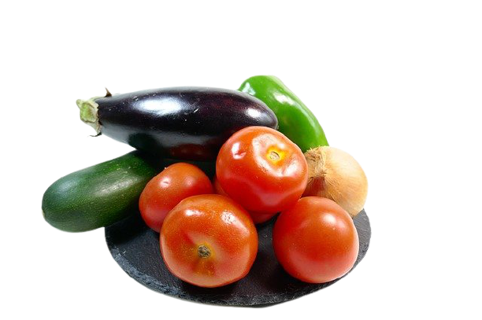

Delish Salads
Like Never Before

Ratatouille
Ratatouille is a classic French recipe, typical of the region of Provence. Its first records are dated to the end of the 17th century. According to some records, its creation was made by peasants and farmers in France who needed to use the harvest of the summer fresh ripened vegetables.

Recipes
- 2 zucchinis
- 2 zucchinis
- eggplants
- 2 onions
- 3 tomatoes
- 1 green pepper
- 1 yellow pepper
- 1 red pepper
- olive oil to taste
- rosemary to taste
- basil to taste
- garlic to taste
- salt to taste
- bay leaf to taste
- tomato sauce
- Cut the vegetables into thin slices without the seeds.
- Cover the bottom of a pan with the tomato sauce.
- Assemble everything alternating with the vegetables.
- Crush the garlic and spread it on top, adding salt and rosemary to taste.
- Drizzle with a little oil and cover with parchment paper or aluminum foil.
- Bake in the oven for 40 minutes at a temperature of 180°C to 200°C.
